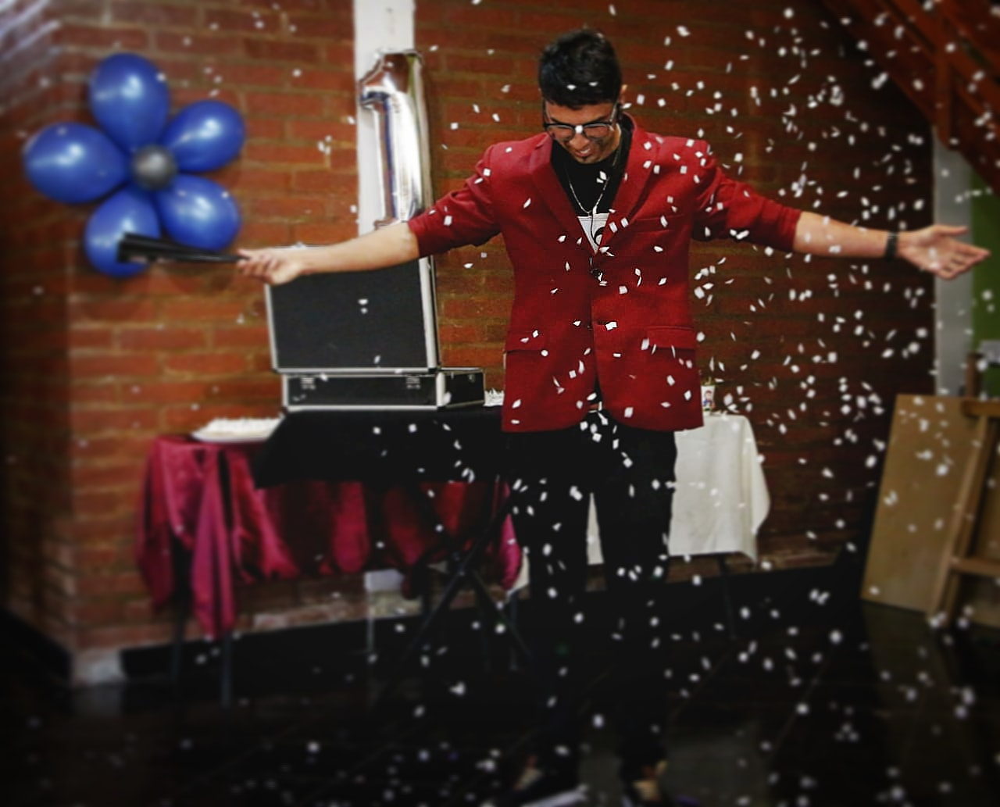
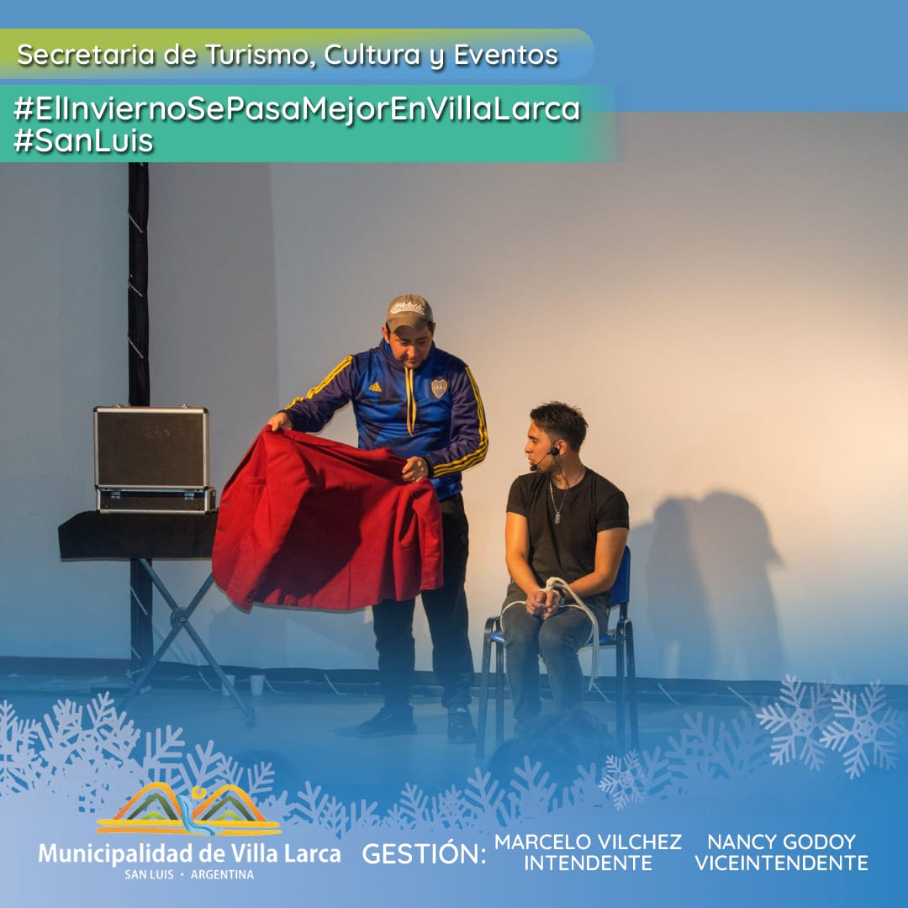
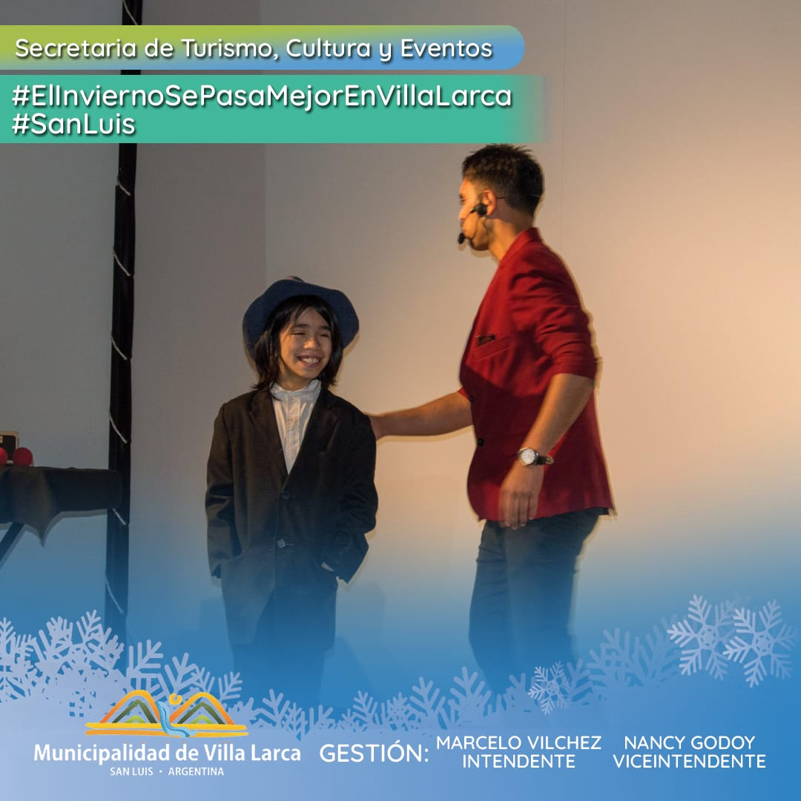
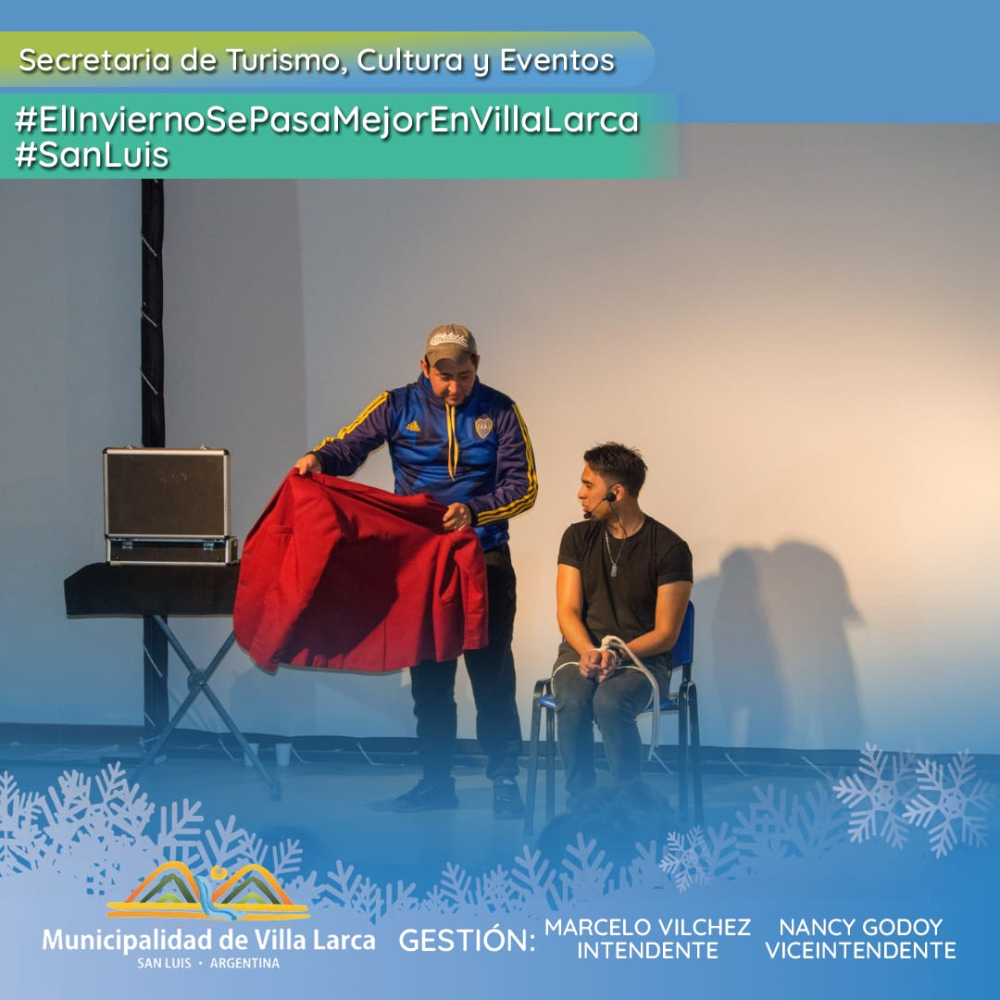
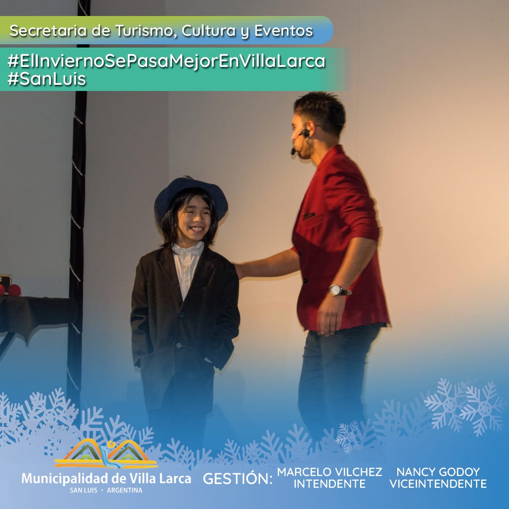
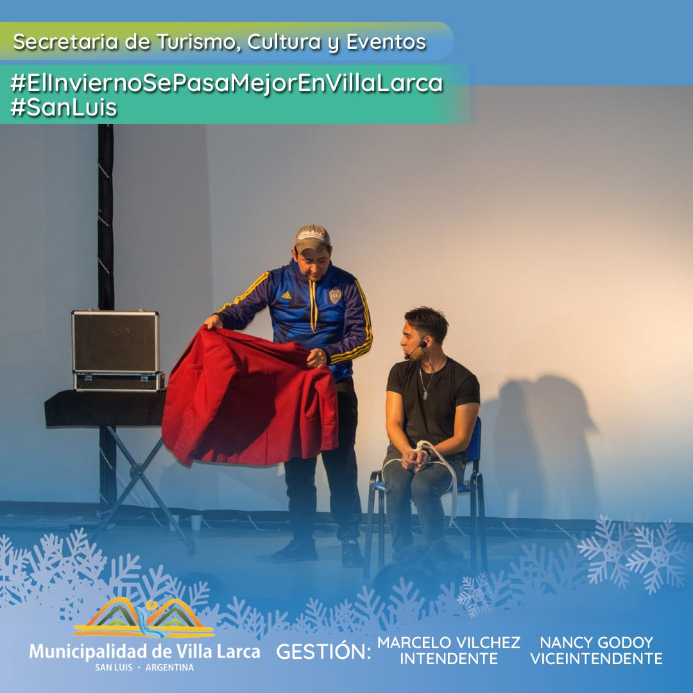
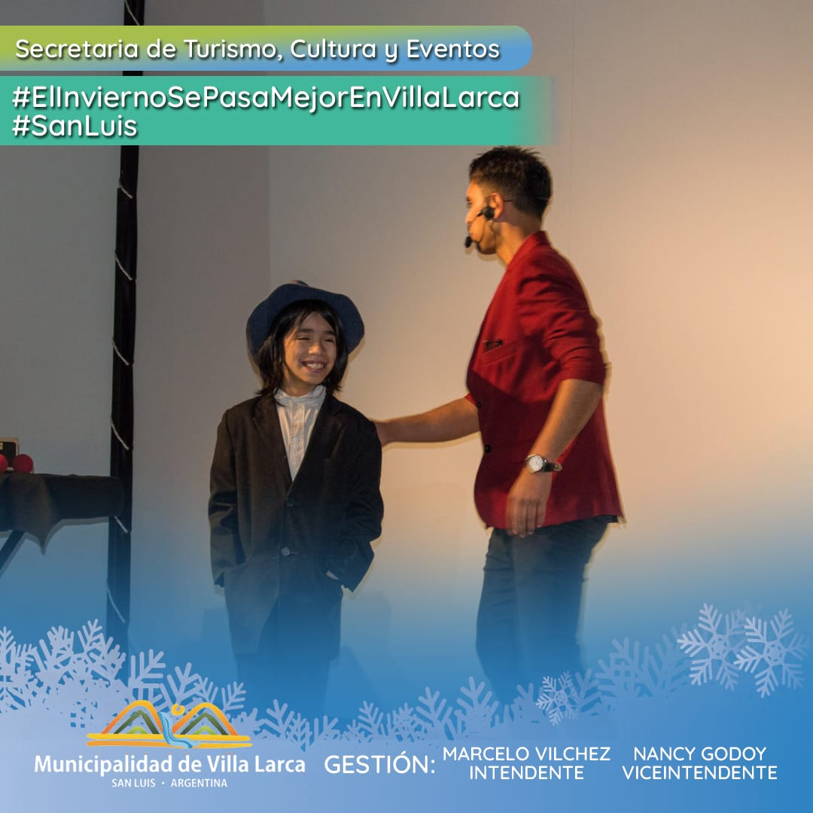

Acá una pequeña galeria de fotos

 







Estas fueron algunas de mis aventuras
En estas fotos aparecen varios de mis amigos magos, en un recuerdo que tengo de cuando fui a Mexico a trabajar para un congreso, shows en zonas cercanas a donde vivo y shows en teatros, notas en un diario de San Luis.
Una de mis favoritas, con el libro de fuego y en un importante casino de la Villa de Merlo.